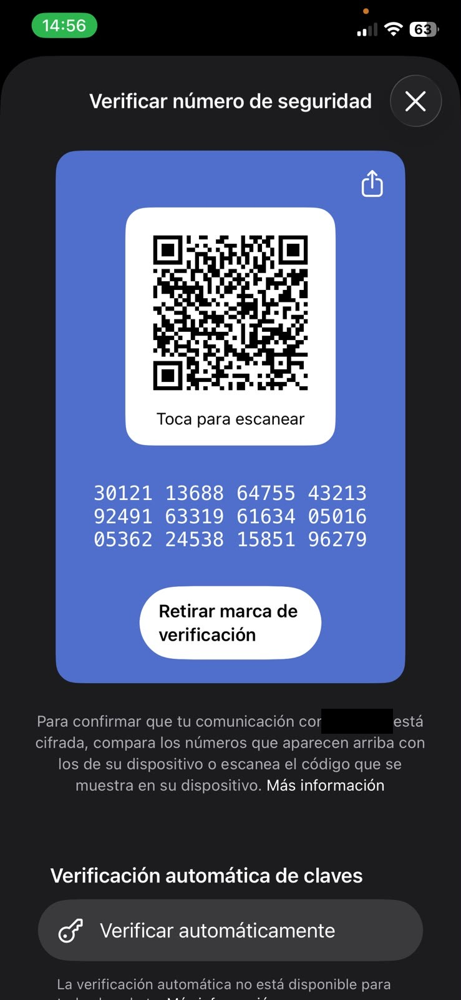
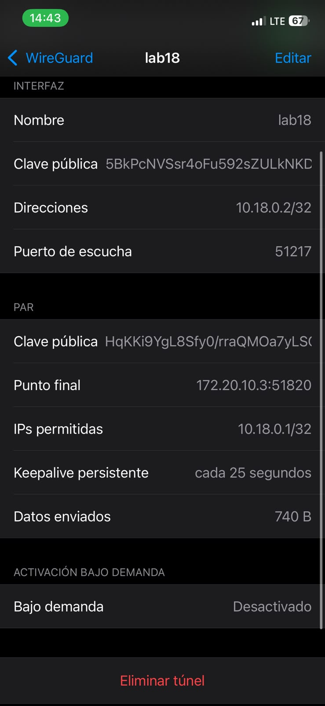
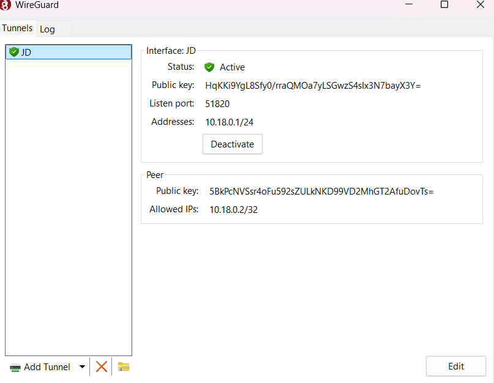
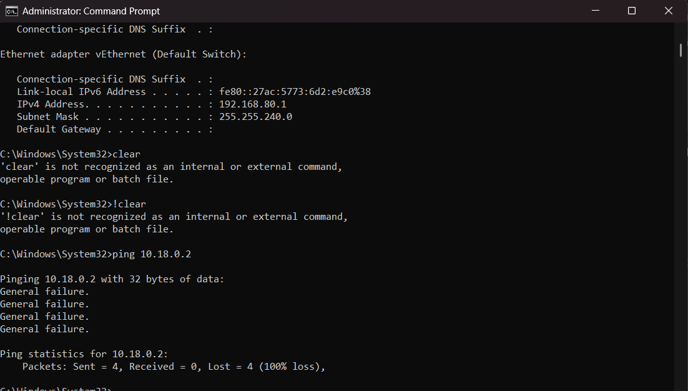
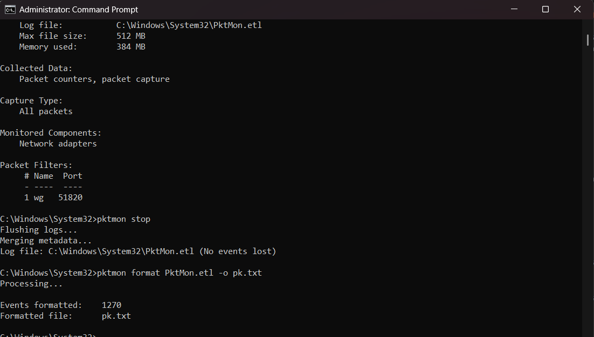

Lab 18: Signal, Safety Number y un túnel WireGuard
Sesión 21 · Qué hicimos, qué vimos en el cable y qué nos llevamos.
1. Signal: Safety Number
El Safety Number es un fingerprint de las dos identity keys de una conversación. Se compara fuera de banda (en persona, por QR o con los 60 dígitos) y se marca como verified.
Cómo funciona
Cada cuenta de Signal tiene una identity key. El Safety Number se calcula con las dos llaves de la conversación: la mía y la del contacto. Por eso es el mismo número en los dos teléfonos, y por eso solo existe entre dos cuentas distintas. Si ambos teléfonos muestran los mismos 60 dígitos (12 bloques de 5), las dos puntas están usando las llaves correctas y nadie se metió en medio. El QR contiene esa misma información, para compararla escaneándolo en lugar de leer los dígitos.
Qué hicimos
- Instalamos Signal en el iPhone y mantuvimos una conversación real con otra persona, con su propia cuenta.
- Abrimos el chat, entramos al contacto y elegimos Ver número de seguridad.
- Comparamos los 60 dígitos (o el QR) contra el dispositivo del contacto.
- Al coincidir, marcamos la conversación como verificada. La pantalla ahora ofrece Retirar marca de verificación, que solo aparece cuando la verificación ya está hecha.

En la captura se ven los 60 dígitos del Safety Number y el estado de la conversación como verificada. Tachamos el nombre del contacto para no exponer datos personales.
Qué detecta un Safety Number que no coincide
¿Qué detecta si no coincide? Un man-in-the-middle por sustitución de llaves: el servidor (comprometido u obligado) o alguien que hizo un SIM swap le entrega una llave falsa a cada lado. Cada teléfono calcula su número con una llave distinta, así que los números no coinciden.
2. Qué sabe y qué no lee el servidor de Signal
| Dato | Servidor | Por qué | ¿Lo entrega? (bigbrother) |
|---|---|---|---|
| Texto del mensaje | No lee | E2EE: PQXDH + Double Ratchet | No |
| Que la cuenta existe | Sabe | Registro con número de teléfono | Sí: fecha de creación |
| Cuándo se conectó | Sabe | Conexión autenticada para recibir mensajes | Sí: solo el día de la última conexión |
| Tamaño aproximado | Ve en tránsito | Longitud del ciphertext (con padding) | No |
| Quién envió | Normalmente no | Sealed sender: el remitente va cifrado dentro del sobre (aunque se podría inferir por IP o timing) | No |
| IP mientras conecta | Ve en tránsito | Es TCP/TLS; Signal dice que no la registra | No |
| Contactos / grupos | No lee | Contactos en el dispositivo; discovery en SGX; grupos cifrados con zkgroup | No |
El servidor ve bastante en tránsito, pero guarda casi nada: en los casos de signal.org/bigbrother solo pudo entregar la fecha de creación de la cuenta y la de la última conexión. Al contenido lo protege la criptografía; a la metadata, en parte la criptografía y en parte la política de no guardar logs.
3. Túnel WireGuard
Hicimos dos despliegues. El primero, con dos peers en contenedores (abajo), completó el handshake y nos dio la captura del cifrado. El segundo, con dispositivos físicos (PC e iPhone), está en 3.1, con el diagnóstico paso a paso y lo que aprendimos.
En la primera montamos dos peers Linux que controlamos en una red de laboratorio aislada, simulada con Docker. Cada uno generó su propia llave privada, que nunca salió del peer; solo intercambiaron las públicas. Usamos AllowedIPs /32, así que es split tunnel y no full-tunnel.
peer: W/EUz37rOrwH8bvTy0ALmcX8KEHxBP4JVy2Fo8VCniY=
endpoint: 172.30.18.20:51820
allowed ips: 10.18.0.2/32
latest handshake: 10 seconds ago
transfer: 1.09 KiB received,
1.18 KiB sent
PING 10.18.0.2 5 packets transmitted, 5 received, 0% packet loss rtt avg = 0.73 ms private key: (hidden) ← nunca en el repo
Lo que vimos en la captura (UDP 51820)
| # | Dirección | Bytes | Tipo |
|---|---|---|---|
| 1 | A → B | 190 | Handshake Initiation: llave efímera en claro, identidad estática cifrada |
| 2 | B → A | 134 | Handshake Response |
| 3 | A → B | 74 | Keepalive (transport vacío) |
| 4–19 | ambos | 170 | Transport Data: los pings, cifrados |
El mismo ping, en dos capas
Mandamos los pings con el patrón LAB18-SECRET0 dentro del payload.
cc df 07 54 3d 81 2b 68 bf cb de 47 dc dc 52 ec 16 ae 26 7a f1 e3 93 c9 …
4c41 4231 382d 5345 4352 LAB18-SECRET0LAB18-SECR ET0LAB18-SECRET0
Mi ISP / la red ve dos IPs que intercambian UDP 51820, cuándo, con qué tamaños (190 / 134 / 170 B) y un keepalive cada 25 s.
El otro peer ve el paquete interno completo: 10.18.0.1 → 10.18.0.2, ICMP y LAB18-SECRET0.
Al terminar: wg-quick down wg0 en los dos peers, wg show vacío y los peers destruidos junto con sus llaves privadas.
3.1 Despliegue físico: PC con Windows ↔ iPhone
Para llevar el laboratorio a un escenario real, desplegamos WireGuard entre dos dispositivos físicos: una PC con Windows (10.18.0.1/24, escuchando en UDP 51820) y un iPhone (10.18.0.2/32). Cada uno cargó la clave pública del otro con AllowedIPs /32, y las claves privadas se generaron en cada dispositivo y no se subieron al repo.
Lo que hicimos
| # | Qué hicimos | Qué comprobamos |
|---|---|---|
| 1 | Instalar WireGuard en Windows y en el iPhone. En la PC se creó el túnel JD y se configuró con Address = 10.18.0.1/24, ListenPort = 51820 y la clave pública del iPhone como peer con AllowedIPs = 10.18.0.2/32. | Túnel activo en la PC, con el peer cargado. |
| 2 | En el iPhone: túnel lab18, 10.18.0.2/32, peer con la clave pública de la PC, endpoint 192.168.1.22:51820 (Wi-Fi de casa), AllowedIPs = 10.18.0.1/32 y keepalive de 25 s. | Túnel activo en el iPhone, enviando tráfico (6.79 KiB). |
| 3 | Probar el túnel con ping 10.18.0.2 desde la PC. | Sin respuesta (General failure): indicó que el handshake aún no se había completado y nos dio la pista para diagnosticar. |
| 4 | Abrir UDP 51820 de entrada en el firewall de Windows con netsh (regla WG-Lab18-allow, todos los perfiles). | Regla creada y habilitada. |
| 5 | Revisar la PC: puerto, perfil de red y conectividad con el iPhone. | WireGuard escucha en UDP 51820 (0.0.0.0 y ::). La PC alcanzó al iPhone por ICMP con 0% de pérdida, así que ambos estaban en la misma red. |
| 6 | Revisar reglas de firewall bloqueantes. Aparecieron reglas codex_sandbox_offline_block_*. | Descartadas como causa: están limitadas a la cuenta de usuario del sandbox (campo LocalUser) y no afectan a WireGuard. |
| 7 | Revisar la pestaña Log de WireGuard en la PC. | Sin errores: adaptador creado, interfaz arriba y arranque completo. |
| 8 | Capturar paquetes con pktmon en la PC, primero sin filtro (1852 eventos) y luego filtrando UDP 51820 sobre los adaptadores de red (1270 eventos). | Ubicó el punto del problema: los paquetes UDP 51820 no llegaban a la tarjeta de red de la PC. |
| 9 | Repetir la prueba en otra red: conectar la PC al punto de acceso personal del iPhone (172.20.10.3) y apuntar el endpoint del iPhone a 172.20.10.3:51820. | Descartó al router de casa como único factor: el iPhone seguía enviando (740 B) con el mismo comportamiento. |



ping 10.18.0.2
pktmon filtrada a UDP 51820Qué aprendimos
- Un ping fallido no dice dónde está el problema. Falla igual si no hay handshake que si el paquete no llega. Hubo que bajar por capas (configuración, firewall, puerto, captura) para ubicarlo.
- WireGuard es silencioso por diseño. Sin handshake no devuelve errores ni respuestas; el único síntoma es
General failurey los contadores de bytes. Por eso latest handshake y transfer son la señal que hay que mirar. - Quien tiene el endpoint inicia. La PC no tenía endpoint del iPhone, así que el primer paquete tenía que salir del iPhone. En un enlace punto a punto, saber quién inicia importa tanto como las claves.
- En el firewall de Windows, un Block gana a un Allow, pero hay que mirar su alcance. Las reglas
codex_sandbox_*parecían sospechosas y se descartaron al ver que estaban limitadas a otro usuario. pktmonpermite capturar en el propio equipo, sin instalar nada, y filtrar por puerto. Con eso pudimos afirmar que los paquetes no llegaban a la tarjeta de red.- Cambiar de red es una buena prueba de aislamiento. Pasar del Wi-Fi de casa al punto de acceso del iPhone quitó al router de la ecuación.
Qué nos limitó
En este despliegue el handshake entre la PC y el iPhone no llegó a completarse, así que la evidencia completa del túnel (handshake, ping y captura del cifrado) es la de la sección anterior, con peers en contenedores. No pudimos ver el tráfico del lado del iPhone ni del router, que habrían mostrado en qué punto exacto se cortaba. Como no hubo túnel establecido, la prueba de bloqueo con esta pareja queda como siguiente paso: bloquear UDP 51820 con una regla de firewall, ver cómo cae el túnel y verlo recuperarse al quitarla. Antes habría que revisar el permiso de Red local de WireGuard en iOS y repetir la captura de la PC en la red del punto de acceso.
3.2 Configuración verificada
Todo lo que dependía de nosotros se configuró y se comprobó, y se repitió en dos redes distintas:
- Claves cruzadas correctamente. La clave pública del peer en la PC es la del iPhone (
5BkPcN…) y la del peer en el iPhone es la de la PC (HqKKi9…). Se ve en las capturas de ambos lados. - Direcciones y rutas coherentes. PC
10.18.0.1/24conAllowedIPs 10.18.0.2/32; iPhone10.18.0.2/32conAllowedIPs 10.18.0.1/32. Cada lado permite exactamente la IP del otro. - Endpoint correcto en cada red. Con
ipconfigconfirmamos192.168.1.22en el Wi-Fi de casa y172.20.10.3en el punto de acceso, y el iPhone se actualizó a cada una. - La PC escuchaba. Se verificó con
Get-NetUDPEndpointque WireGuard tenía UDP 51820 abierto, con la regla de entrada habilitada en todos los perfiles y el log sin errores. - El iPhone enviaba. Mostró bytes enviados en todos los intentos (6.79 KiB y 740 B).
- Había conectividad básica. La PC alcanzó al iPhone por ICMP con 0% de pérdida.
Con esto quedaron cubiertas las causas que estaban en nuestras manos: claves, direcciones, endpoint, firewall local y puerto. Lo que queda por aislar está entre los dos dispositivos, en la red o en cómo iOS maneja UDP hacia la red local.
4. E2EE en una página
Hay una llave por mensaje y se borra después de usarla. Si me roban el teléfono hoy, el tráfico viejo que grabaron sigue cifrado. Pero el historial guardado en el teléfono se lee igual; eso lo resuelven los mensajes temporales.
El ratchet DH mete aleatoriedad nueva en cada turno, así que si el atacante deja de mirar, la sesión se "cura". Contra malware persistente no hay protocolo que valga.
Acceso excepcional. En Signal habría que cambiar los clientes (escrow de llaves, un "usuario fantasma" o escaneo en el cliente). En WireGuard no hay proveedor central, así que habría que cambiar el protocolo o comprometer cada endpoint. Como dice Keys Under Doormats (Abelson et al., 2015): mata la forward secrecy, añade complejidad y concentra llaves en un solo blanco.
| Esconde | Frente a | No esconde | |
|---|---|---|---|
| Signal | Contenido de los mensajes | Servidor y red | Que usas Signal y cuándo |
| WireGuard | Contenido + IPs internas | ISP / red intermedia | Que existe el túnel; al otro peer no le oculta nada |
| Tor | Quién habla con quién | ISP y destino | Contenido frente al nodo de salida (sin TLS) |
5. Qué aprendimos
- Cifrar el payload no oculta la metadata. El ping era ilegible, pero cualquiera en la red sabía quién hablaba con quién, cuánto y cada cuánto. Hasta el keepalive delata el túnel.
- Una VPN no anonimiza: mueve la confianza. El ISP deja de ver los destinos y ahora los ve el otro extremo. En full-tunnel vería todo. Por eso usamos /32.
- Cifrar sin autenticar es un MITM esperando a pasar. El Safety Number de Signal y las public keys pegadas a mano en WireGuard resuelven el mismo problema: saber con quién estás hablando.
- "No guardamos" es una promesa; "no podemos leer" es matemática. bigbrother demuestra que Signal cumple la política, pero solo lo segundo se puede verificar.